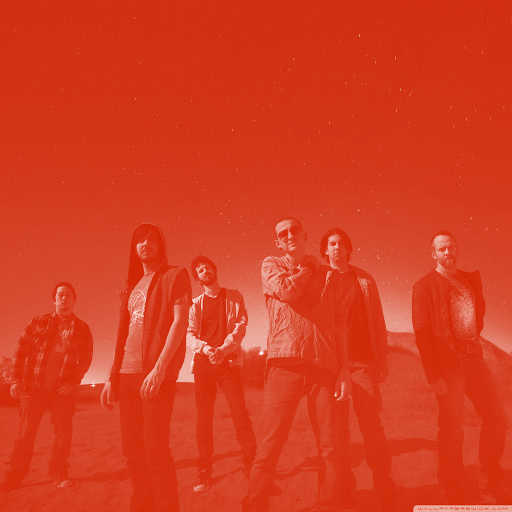
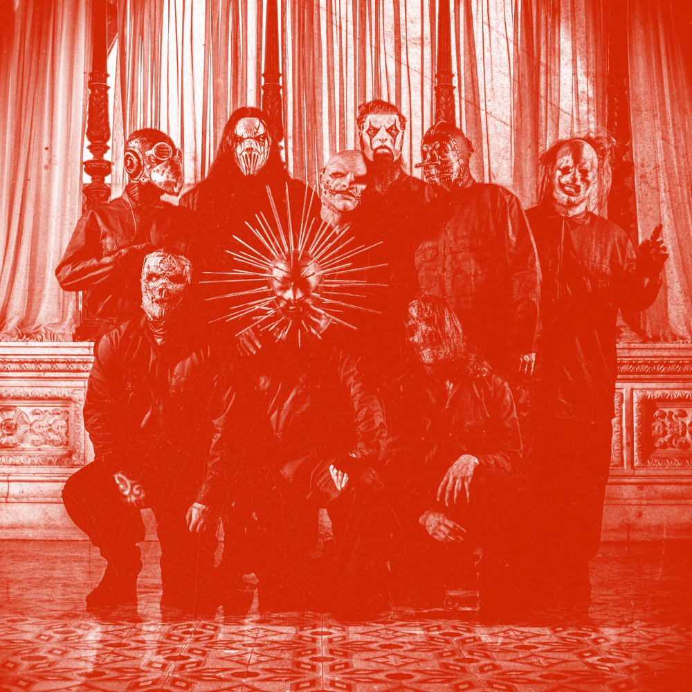
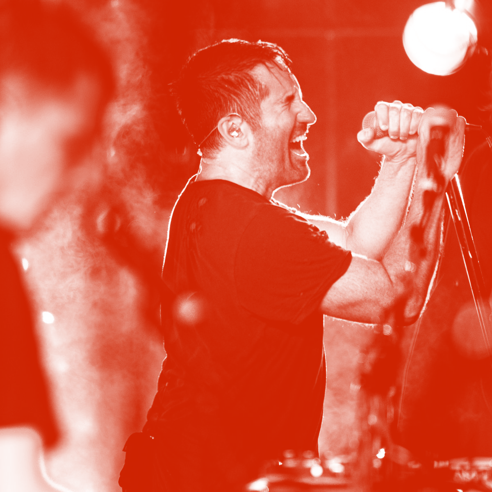

Músicas favoritas
Bandas favoritas
Músicas favoritas
Sabe aquelas músicas que você não cansa nunca de escutar? Saca só quais são as minhas "on repeat" do Spotify:
Bandas favoritas
Linkin Park

CD favorito:
A Thousand Suns
Slipknot

CD favorito:
We Are Not Your Kind
Nine Inch Nails

CD favorito:
The Fragile